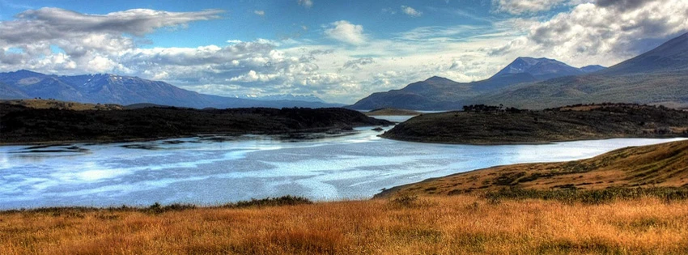

Free Facebook Header Images

I set out to create some free Facebook header images the other day based on the eight months of travel I did in 2011. While I've customized them a bit further, I thought I would release these basic versions in case anyone else would like a new header.
Simply click on each photo to obtain the large, properly sized Facebook header image.
Puerto Madero, Buenos Aires, Argentina

Cape Reinga, North Island, New Zealand

Ko Pee Pee Leh, Thailand

Oahu, Hawaii, United States

Running Gentoo Penguin, Ushuaia, Argentina

Wish Lantern, Northern Thailand

Tierra Del Fuego, Argentina

Yaletown, Vancouver, Canada

If you use any of these free facebook header images, please click "Like" above or send a Tweet out - thanks! I have more available from some of my future travels, so I'll try and add some more to this list shortly.